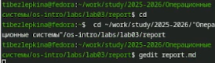
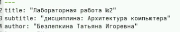
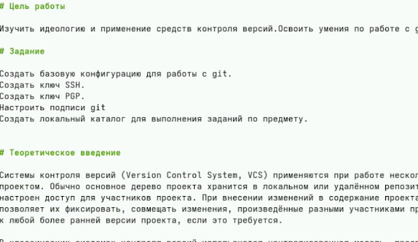
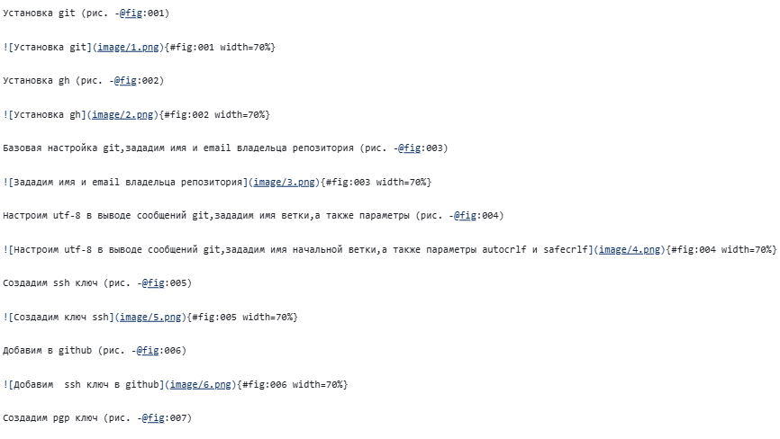

Архитектура компьютеров
Безлепкина Т.И.
Российский университет дружбы народов, Москва, Россия
06 марта 2026
Мы научились оформлять отчёты с помощью легковесного языка разметки Markdown.
Сделайте отчёт по предыдущей лабораторной работе в формате Markdown. В качестве отчёта просьба предоставить отчёты в 3 форматах: pdf, docx и md (в архиве, поскольку он должен содержать скриншоты, Makefile и т.д.)
Markdown — один из наиболее популярных языков разметки для создания технической документации, отчётов и презентаций. Его простота и удобство позволяют быстро форматировать текст, а возможность конвертации в различные форматы (PDF, DOCX, HTML) делает его незаменимым инструментом для студентов и исследователей при подготовке лабораторных работ и научных публикаций.
Объект: язык разметки Markdown и инструменты его обработки. Предмет: процесс создания структурированных документов с помощью Markdown и их конвертация в целевые форматы с использованием Pandoc
Систематизация приёмов работы с Markdown и Pandoc для эффективной подготовки учебной и научной документации, включая автоматизацию процесса конвертации с помощью Makefile и интеграцию с системами контроля версий.
Освоение базового синтаксиса Markdown для быстрого форматирования текстов
Возможность создания документов, не зависящих от конкретного текстового процессора. Автоматизация конвертации в различные форматы (PDF, DOCX, HTML) с помощью Pandoc. Упрощение процесса подготовки отчётов по лабораторным работам. Интеграция с Git для версионирования документации.
Markdown — язык разметки для форматирования текста. Заголовки обозначаются #, полужирный текст — **, курсив — *. Списки создаются звёздочками или цифрами, ссылки — текст, код — обратными кавычками. Для конвертации используется Pandoc: pandoc файл.md -o файл.pdf.
В рабочей директории курса через тектовый редактор файла открываю шаблон

Указываю основную информацию о лабораторной работе

Формирую цель работы,задание и заполняю теоритическое введение

Описываю процесс выполнения лабораторной работы

Мы научились оформлять отчёты с помощью легковесного языка разметки Markdown.